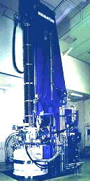
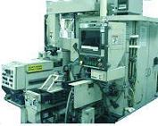
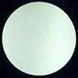

Incoming Wafers
Integrated
circuits are fabricated on
single-crystal
silicon
substrates with
near-perfect
crystalline properties:
defect free and uniform crystal structure
as well as high chemical purity. These substrates are
processed in the form of
wafers,
so the fabrication of circuits on these wafers is known as
wafer
fabrication.
The
steps needed to obtain wafers for circuit fabrication are very
complex, but these can be simplified as follows:
1)
Quartzite,
a type of sand that's used as raw material for wafers, undergoes a
complicated
refining process to become electronic grade
polysilicon (EGS).
2)
The EGS material is then used to grow single crystal ultrapure silicon
ingots either by the
Czochralski
(CZ) or
Float Zone (FZ) method.
3) Each
ingot then undergoes
grinding,
sawing,
and
polishing
to yield many wafers.
|
 |
|
Figure 1.
Example of a Czochralski Silicon Crystal Growing Furnace |
A
wafer has to meet certain quality criteria or specifications for it to
be ready for wafer fabrication.
Electrical specifications include
the conductivity type (p or n), resistivity range, radial resistivity
gradient, and resistivity variations.
Mechanical specifications include
the diameter, thickness, total thickness variation (TTV), bow, warp,
flat dimensions, chips, indents, edge contour, bulk structural defects,
and surface orientation.
Chemical
specifications
include oxygen content, carbon content, and
oxidation-induced defects.
Surface
specifications include flatness, particle density, haze, saucer pits,
and other surface attributes.
|
 |
 |
|
Figure 2.
Example of an ingot slicer |
Figure 3.
Photo of a finished wafer
|
Wafer Fab
Links:
Incoming
Wafers;
Epitaxy;
Diffusion;
Ion
Implant;
Polysilicon;
Dielectric;
Lithography/Etch;
Thin
Films;
Metallization;
Glassivation;
Probe/Trim
See Also:
Single Crystal Growth;
Wafer Cleaning; Crystal
Defects;
Wafer Specifications;
IC
Manufacturing; Wafer Fab Equipment
HOME
Copyright
©
2001-2006
www.EESemi.com.
All Rights Reserved.